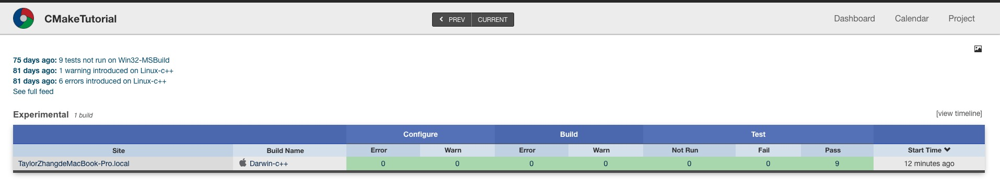

CMake 是一种跨平台的免费开源软件工具，用于使用与编译器无关的方法来管理软件的构建过程。在 Android Studio 上进行 NDK 开发默认就是使用 CMake 管理 C/C++ 代码，因此在学习 NDK 之前最好对 CMake 有一定的了解。
本文主要以翻译 CMake 的官方教程文档为主，加上自己的一些理解，该教程涵盖了 CMake 的常见使用场景。由于能力有限，翻译部分采用机翻+人工校对，翻译有问题的地方，说声抱歉。
开发环境：
- macOS 10.14.6
- CMake 3.15.1
- CLion 2018.2.4
指定编译定义
在上一步 “系统自检” 中，除了在 TutorialConfig.h 中保存 HAVE_LOG 和 HAVE_EXP 值之外，还有更好的做法吗？对于此示例，我们将尝试使用 target_compile_definitions。
首先，从 TutorialConfig.h.in 中删除上一步的定义，在 mysqrt.cxx 中不再包含 TutorialConfig.h，移除上一步在 MathFunctions/CMakeLists.txt 中增加的额外包含。
接下来，我们可以将 HAVE_LOG 和 HAVE_EXP 的检查移至 MathFunctions/CMakeLists.txt，然后添加将这些值指定为 PRIVATE 编译定义。
1 | # does this system provide the log and exp functions? |
完成这些更新后，在项目根目录运行命令编译项目和生成可执行文件：
1 | cmake -B cmake-build-debug |
在项目根目录运行生成的可执行文件：
1 | ./cmake-build-debug/Tutorial 2 |
终端输出：
1 | Computing sqrt of 2 to be 1.41421 using log and exp |
添加自定义命令和生成的文件
假设，出于本教程的目的，我们决定不再使用平台日志和exp函数，而是希望生成一个可在 mysqrt 函数中使用的预计算值表。在本节中，我们将在构建过程中创建表，然后将该表编译到我们的应用程序中。
首先，让我们取消对 MathFunctions/CMakeLists.txt 中的 log和 exp 函数的检查。然后从 mysqrt.cxx 中删除对 HAVE_LOG 和 HAVE_EXP 的检查。同时，我们可以删除 #include <cmath>。
在 MathFunctions 子目录中，提供了一个名为 MakeTable.cxx 的新源文件来生成表。
1 | // A simple program that builds a sqrt table |
我们可以看到生成的表不是简单的文本，而是一段C++代码。并且该文件的文件名是由参数传入决定的。
下一步是将适当的命令添加到 MathFunctions/CMakeLists.txt 文件中，以构建MakeTable 可执行文件，然后在构建过程中运行它。需要一些命令来完成此操作。
首先，在 MathFunctions/CMakeLists.txt 的顶部，添加 MakeTable 的可执行文件，就像添加任何其他可执行文件一样。
1 | # first we add the executable that generates the table |
然后，我们添加一个自定义命令，该命令指定如何通过运行 MakeTable 来产生 Table.h。
1 | # add the command to generate the source code |
接下来，我们必须让 CMake 知道 mysqrt.cxx 依赖生成的文件 Table.h。这是通过将生成的 Table.h 添加到库 MathFunctions 的源列表中来完成的。
1 | # add the main library |
我们还必须将当前的二进制目录添加到包含目录列表中，以便 mysqrt.cxx 可以找到并包含 Table.h 。
1 | # state that anybody linking to us needs to include the current source dir |
现在，使用生成的表。首先，修改 mysqrt.cxx 以包含 Table.h 。接下来，我们可以重写 mysqrt 函数以使用该表：
1 | double mysqrt(double x) { |
在项目根目录运行命令编译项目和生成可执行文件：
1 | cmake -B cmake-build-debug |
在项目根目录运行生成的可执行文件：
1 | ./cmake-build-debug/Tutorial 2 |
终端输出：
1 | Use the table to help find an initial value |
在项目根目录运行生成的可执行文件：
1 | ./cmake-build-debug/Tutorial 12 |
终端输出：
1 | Computing sqrt of 12 to be 6.5 |
生成安装程序
接下来，假设我们想将项目分发给其他人，以便他们可以使用它。我们希望在各种平台上提供二进制和源代码分发。这与我们之前在 “安装” 示例进行的安装有些不同，在之前安装中，我们根据源代码构建的二进制文件进行安装。
在此示例中，我们将构建支持二进制安装和程序包管理功能的安装程序包。为此，我们将使用 CPack 创建平台特定的安装程序。具体来说，我们需要在顶级 CMakeLists.txt 文件的底部添加几行。
1 | # setup installer |
这就是全部，我们首先包含 InstallRequiredSystemLibraries，该模块将包含项目在当前平台所需的任何运行时库。
接下来，我们将一些项目信息设置给 CPack 变量，比如项目的许可证和版本信息。本示例中 License.txt 内容如下：
1 | This is a License file. |
最后，我们包含 CPack 模块，该模块将使用这些变量和当前系统的其他一些属性来设置安装程序。
在项目根目录运行命令编译项目：
1 | cmake -B cmake-build-debug |
在项目根目录运行命令构建二进制发行版：
1 | cd cmake-build-debug |
在项目根目录下生成了文件：
1 | . |
注意：要指定生成器，请使用 -G 选项。对于多配置构建，请使用 -C 指定配置。例如：
1 | cpack -G ZIP -C Debug |
在项目根目录运行命令构建源代码分发：
1 | cd cmake-build-debug |
在项目根目录下生成了文件：
1 | . |
添加对仪表板的支持
我们已经在 “测试” 示例中为我们的项目定义了许多测试。现在，我们只需要运行这些测试并将其提交到仪表板即可。为了包括对仪表板的支持，我们在顶层 CMakeLists.txt 中包含了 CTest 模块。
将以下内容：
1 | # enable testing |
替换为：
1 | # enable dashboard scripting |
CTest 模块将自动调用 enable_testing()，因此我们可以将其从 CMake 文件中删除。我们还需要在顶级目录中创建一个 CTestConfig.cmake 文件，在该文件中我们可以指定项目的名称以及提交仪表板的位置。
1 | set(CTEST_PROJECT_NAME "CMakeTutorial") |
CTest 将在运行时读入该文件。
在项目根目录运行命令编译项目：
1 | cmake -B cmake-build-debug |
在项目根目录运行命令生成仪表板：
1 | cd cmake-build-debug |
注意：对于多配置生成器（例如Visual Studio），必须指定配置类型：
1 | ctest [-VV] -C Debug –D Experimental |
或者从 IDE中 构建 Experimental 目标。
ctest 将构建和测试项目，并将结果提交给Kitware公共仪表板。仪表板的结果将被上传到Kitware的公共仪表板：https://my.cdash.org/index.php?project=CMakeTutorial，如下图所示：

CMake使用教程系列文章
- CMake使用教程(一)
- 基础项目
- 添加版本号和配置头文件
- 指定C++标准
- 添加库
- 提供选项
- CMake使用教程(二)
- 添加“库”的使用要求
- 安装
- 测试
- 系统自检
- CMake使用教程(三)
- 指定编译定义
- 添加自定义命令和生成的文件
- 生成安装程序
- 添加对仪表板的支持
- CMake使用教程(四)
- 混合静态和共享
- 添加生成器表达式
- 添加导出配置